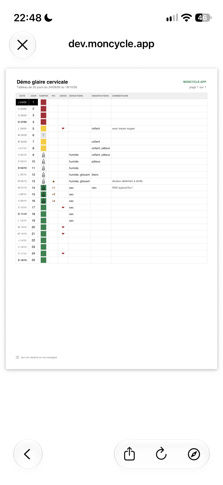
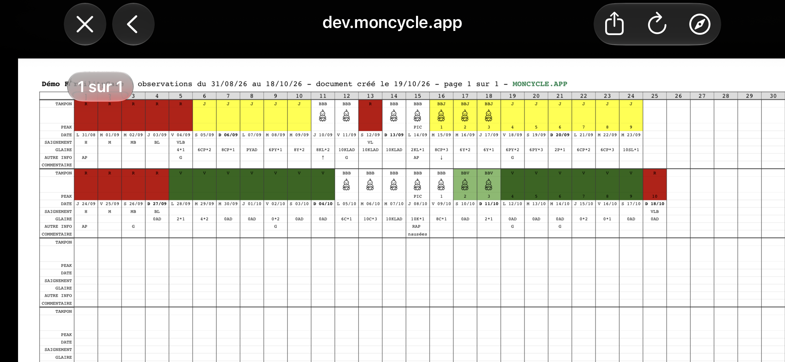

Billings · FertilityCare · Température
moncycle.app, le carnet de suivi de cycle féminin au service des méthodes de régulation naturelle des naissances !
Chaque soir, vous notez vos observations de la journée : glaire cervicale, règles et, si vous la mesurez, température. L’application les présente sous la forme d’un tableau clair, lisible par vous comme par votre moniteur ou votre instructrice. Elle est gratuite, sans publicité et ne fait aucune prédiction.
Application web pour téléphone et ordinateur, hébergée en France. Développée et distribuée par l’association Tech 4 Fertility.


Fonctionnement
Aucune application à télécharger depuis un magasin d’applications. Une fois la méthode apprise auprès d’un moniteur ou d’une instructrice, une saisie quotidienne suffit.
-
Vous créez votre compte
Choisissez un pseudonyme (vos initiales suffisent), une adresse e-mail qui ne révèle pas votre nom et la méthode suivie. Il vous suffit ensuite de cliquer sur le lien de confirmation reçu par e-mail : votre tableau est prêt.
-
Chaque soir, vous notez la journée
Vous saisissez vos sensations et vos observations, vos règles, votre température si vous la mesurez et, si nécessaire, un commentaire. Vous choisissez ensuite le tampon de couleur correspondant à la journée.
-
Le tableau se construit
Jour après jour, dans la notation standard de la méthode choisie. Si vous mesurez votre température, sa courbe s’affiche au-dessus du cycle.
-
Vous l’exportez ou le partagez
Exportez vos cycles en PDF, CSV ou NFP à tout moment. Si vous le souhaitez, vous pouvez aussi activer l’envoi automatique de chaque cycle terminé par e-mail, à votre adresse et à cinq destinataires au plus : votre conjoint, votre moniteur ou votre instructrice.
Installer l’application sur votre téléphone
moncycle.app est une application web : elle n’est disponible ni sur l’App Store, ni sur Google Play. Depuis votre tableau, ajoutez la page à l’écran d’accueil : une icône apparaît, et l’application s’ouvre ensuite comme n’importe quelle autre.
Sur iPhone, dans Safari : touchez le bouton Partager, puis « Sur l’écran d’accueil ».
Sur Android, dans Chrome : ouvrez le menu en haut à droite, puis choisissez « Ajouter à l’écran d’accueil ».
Tech 4 Fertility prépare des applications pour iPhone et Android. Leur sortie sera annoncée ici ; en attendant, l’application web reste la seule version disponible.
-

iPhone -

Android


Pourquoi choisir moncycle.app
Conçue pour les femmes et les couples qui suivent une méthode de régulation naturelle des naissances, elle remplace le carnet papier sans jamais interpréter à votre place.
Conçue pour la régulation naturelle des naissances
La glaire cervicale et les règles Sensation, aspect, flux : tout ce que la méthode vous a appris à observer.
La température, si vous la mesurez Elle s’ajoute au tableau, accompagnée de sa courbe. Dans le cas contraire, elle n’apparaît pas.
Billings et FertilityCare Compatibles à 100 %, chacune avec sa notation officielle.
Sans IA, sans prédiction Aucun calcul ne détermine votre fertilité : le tableau présente uniquement ce que vous avez saisi.
Au quotidien
Pensée pour le téléphone Et tout aussi lisible sur ordinateur.
Mode sombre Idéal pour la saisie du soir.
Sur tous vos appareils Vos données sont synchronisées entre le téléphone, la tablette et l’ordinateur.
Export PDF, CSV et NFP Pour imprimer, conserver une copie ou changer d’outil.
Envoi par e-mail, en option Une fois l’option activée, chaque cycle terminé est envoyé à votre adresse et aux destinataires de votre choix.
Vos données
Hébergées en France Chez OVH. Aucune donnée ne quitte l’Union européenne.
Ni publicité, ni pistage, ni revente L’application est financée par les dons, et non par vos données.
Double authentification (TOTP) En option, avec une alerte par e-mail à chaque nouvelle connexion.
Open source Le code est public : chacun peut en vérifier le fonctionnement.
moncycle.app en chiffres
- comptes ouverts
- 2 190
- cycles enregistrés
- 18 000
- observations notées
- 372 700
Chiffres arrondis au .
Découvrir l’application
Le plus simple est de l’essayer : deux comptes de démonstration sont accessibles à tous, sans inscription.
Essayer avec un compte de démonstration
Choisissez le compte correspondant à la méthode qui vous intéresse et connectez-vous avec les identifiants ci-dessous. Ces comptes sont publics : chacun peut les consulter et les modifier, et ils sont réinitialisés toutes les heures. N’y saisissez aucune information personnelle.
- Billings
demo.mucus.self.obs@moncycle.app- FertilityCare
demo.fc@moncycle.app- Mot de passe
demo
Captures d’écran

Le tableau d’un cycle 
La courbe de température 
La notation FertilityCare 
La saisie FertilityCare 
La saisie d’une journée 
Vos propres mots clés 
Plusieurs cycles côte à côte 
L’export de ses données 
Le PDF d’un cycle Billings 
Le PDF d’un cycle FertilityCare


Les méthodes de régulation naturelle des naissances
« Ce sont des méthodes basées sur la connaissance des signes de fertilité du cycle féminin. Le couple peut ainsi connaître avec précision les périodes fertiles ou infertiles qu’il traverse. En fonction de son projet d’enfant, il peut ainsi connaitre le meilleur moment pour transmettre la vie, ou quelles sont ses périodes infertiles lorsqu’il souhaite espacer ou limiter les naissances. »
Plusieurs méthodes existent, enseignées par différentes associations. Voici le niveau de compatibilité de moncycle.app avec les plus répandues en France (liste non exhaustive).
-
Méthode Billings
Compatible à 100 %Trouver un couple formateur auprès du Centre Billings France.
-
FertilityCare (NaProTECHNOLOGY)
Compatible à 100 %Trouver une instructrice auprès de FertilityCare France.
-
Cyclamen (symptothermie)
Partiellement compatibleL’application ne permet qu’une lecture partielle des courbes de température.
-
SensiPlan (symptothermie)
Partiellement compatibleMême limite : la courbe de température n’est interprétée que partiellement.
-
Méthode M (M fertilité, symptothermie)
Partiellement compatibleMême limite que pour les autres méthodes symptothermiques.
L’interprétation de votre tableau vous appartient
moncycle.app ne cherche ni à prédire, ni à vérifier l’application des règles de la méthode, et ne remplace pas votre moniteur ou votre instructrice. C’est un support numérique, au même titre que le carnet papier. Si vous découvrez les méthodes de régulation naturelle des naissances, ou si une règle soulève une question, adressez-vous à un moniteur ou à une instructrice de l’association qui enseigne la méthode que vous suivez.
Histoire
John et Evelyn Billings, les docteurs qui ont appris à lire la glaire
La méthode Billings doit son nom à un couple de docteurs de Melbourne, en Australie. Leurs travaux ont fait passer le suivi du cycle du calcul des dates à la lecture des signes du corps.
-
À la demande du père Maurice Catarinich, le neurologue John Billings entreprend de rechercher une méthode de régulation naturelle des naissances. La méthode Ogino-Knaus, fondée sur un calcul de calendrier, est jugée trop imprécise. Son intuition : la glaire cervicale, dont l’aspect et la texture changent au fil du cycle, renseigne mieux que n’importe quel calcul sur l’approche de l’ovulation.
-
John Billings publie son premier livre, The Ovulation Method. Son épouse Evelyn, également docteure, en a relu le manuscrit : c’est ainsi qu’elle découvre ses travaux.
-
Evelyn Billings travaille désormais avec lui, en particulier sur les cycles difficiles à lire. Elle apprend à reconnaître, dans les tableaux des femmes, les schémas de sécheresse et de glaire qui précèdent l’ovulation, mais aussi ceux qui signalent les jours infertiles.
-
The Lancet publie l’étude des deux Billings, cosignée par H. G. Burger et par le chercheur James Brown, arrivé à Melbourne en 1962 pour créer l’unité d’endocrinologie du Royal Women’s Hospital. Les dosages hormonaux confirment ce que les femmes observaient : les changements de la glaire suivent les variations des œstrogènes et de la progestérone.
Un tournant
Cette double validation, par l’observation et par les dosages hormonaux, a donné aux méthodes de régulation naturelle des naissances une base scientifique qui ne reposait plus sur le seul calcul des dates. La méthode Billings a inspiré la méthode symptothermique, qui associe l’observation de la glaire à la mesure de la température. Elle est également à l’origine des méthodes actuelles d’observation de la fertilité, qui croisent plusieurs signes du corps.
Plus de soixante-dix ans après les premières recherches de John Billings, savoir observer sa glaire cervicale demeure l’un des fondements de la connaissance de son cycle.
Questions fréquentes
Retrouvez ici les réponses aux questions les plus courantes. Pour aller plus loin, nos conditions d’utilisation détaillent le fonctionnement de l’application et la protection de vos données.
Qu’est-ce que moncycle.app ?
moncycle.app est un carnet de suivi de cycle conçu pour les méthodes de régulation naturelle des naissances : Billings et FertilityCare, avec ou sans température. Vous saisissez vos observations ; l’application les présente sous forme de tableau et permet de les exporter. Cette application web gratuite s’utilise aussi bien sur téléphone que sur ordinateur.
Il s’agit d’un outil de bien-être : ce n’est ni un dispositif médical, ni un moyen de contraception, ni un outil de diagnostic.
Qui développe moncycle.app ?
L’application est développée et distribuée par Tech 4 Fertility, une association française à but non lucratif (loi de 1901) dont le siège se trouve à Vernon (Eure). L’association en est propriétaire depuis octobre 2026. Le code source est public et disponible sur GitHub.
L’application est-elle vraiment gratuite ? Comment la soutenir ?
Oui. Il n’y a ni abonnement, ni version payante, ni publicité, et vos données ne sont jamais vendues. L’application est financée par les dons versés à Tech 4 Fertility, qui couvrent l’hébergement, le nom de domaine et le temps consacré à sa maintenance. Pour faire un don, rendez-vous dans la rubrique Soutenir moncycle.app.
Comment créer un compte ?
Rendez-vous sur la page d’inscription. Vous devez avoir 18 ans révolus. Les informations demandées sont les suivantes :
- un pseudonyme (vos initiales suffisent) ;
- une adresse e-mail qui ne permet pas de vous identifier (évitez par exemple prenom.nom@…) ;
- un mot de passe d’au moins 10 caractères, que vous n’utilisez pour aucun autre service ;
- votre année de naissance et la méthode que vous suivez.
Vous recevez ensuite un lien de confirmation, valable 3 jours. Tout compte non confirmé est supprimé au bout de 7 jours.
Comment installer moncycle.app sur iPhone ou Android ?
moncycle.app n’est disponible ni sur l’App Store, ni sur Google Play : il s’agit d’une application web. Connectez-vous, ouvrez votre tableau, puis ajoutez la page à l’écran d’accueil. Sur iPhone, dans Safari, touchez le bouton Partager, puis « Sur l’écran d’accueil ». Sur Android, dans Chrome, ouvrez le menu, puis choisissez « Ajouter à l’écran d’accueil ». L’icône ainsi créée ouvre directement l’application.
Tech 4 Fertility prépare des applications pour iPhone et Android. Leur sortie sera annoncée sur ce site.
Les applications de suivi de cycle sont-elles fiables ?
Cela dépend de ce que l’on en attend. La plupart d’entre elles annoncent les prochaines règles ou la date d’ovulation à partir de la durée des cycles précédents. C’est le principe de l’ancienne méthode du calendrier d’Ogino, transposée au numérique : elle perd toute fiabilité dès que la durée des cycles varie, ce qui est le cas chez de nombreuses femmes.
Les méthodes d’observation procèdent à l’inverse : elles s’appuient sur les signes du cycle en cours, comme la glaire cervicale ou la température.
C’est pourquoi moncycle.app ne fait aucune prédiction. Elle enregistre vos observations et les présente dans la notation de la méthode suivie. L’interprétation vous appartient.
Peut-on utiliser une application de suivi de cycle comme contraception ?
Non. Une application n’est pas un moyen de contraception : elle n’est que le carnet dans lequel vous consignez vos observations. Si vous suivez une méthode de régulation naturelle des naissances afin d’espacer les grossesses, l’essentiel réside dans l’observation quotidienne et dans l’application rigoureuse des règles de la méthode, apprises auprès d’un moniteur ou d’une instructrice qualifiés.
moncycle.app ne vous indique jamais si un jour est fertile ou non, et ne vérifie pas votre interprétation du tableau. Aucune méthode n’est efficace à 100 %, et l’application ne garantit ni d’éviter une grossesse, ni d’en obtenir une. Les décisions vous appartiennent, à vous et à votre conjoint.
Mes données de cycle sont-elles privées ? Peuvent-elles être vendues ?
Les données de cycle comptent parmi les plus intimes que l’on puisse confier à un téléphone. Avant de choisir une application, deux questions permettent souvent d’y voir clair : qui la finance, et où les données sont-elles stockées ?
Concernant moncycle.app :
- elle est financée par les dons, sans publicité ni outil de pistage, et vos données ne sont ni vendues ni cédées ;
- les serveurs sont situés en France, chez OVH, et aucune donnée ne quitte l’Union européenne ; le traitement est conforme au RGPD ;
- aucun membre de l’association ne consulte vos observations. En dehors de l’hébergeur, elles ne sont transmises qu’aux adresses e-mail que vous avez vous-même ajoutées et, si vous l’acceptez, à des fins de recherche. Les autorités ne peuvent y accéder que dans le cadre d’une demande légale ;
- la participation à la recherche est facultative : elle nécessite un consentement distinct, et les données exportées ne comportent ni e-mail, ni pseudonyme, ni texte libre ;
- la connexion est chiffrée (HTTPS), les mots de passe sont stockés sous forme d’empreinte, la double authentification est disponible et chaque nouvelle connexion vous est signalée par e-mail.
Un point de vigilance : si vous activez l’envoi des cycles par e-mail (option désactivée par défaut), ces messages transitent comme tout autre e-mail, sans chiffrement de bout en bout. Vous pouvez désactiver cet envoi à tout moment dans « Mon compte ». Le code étant ouvert, chacun peut vérifier ces engagements.
Enfin, ne saisissez ni votre nom, ni aucune donnée médicale (maladie, traitement, diagnostic) : l’application n’est pas conçue pour les recevoir.
Puis-je exporter, synchroniser ou supprimer mes données ?
Oui, sans avoir à en faire la demande. Depuis « Mon compte », vous pouvez exporter vos cycles en PDF, CSV ou NFP, récupérer l’ensemble des données brutes de votre compte, importer des données et supprimer votre compte. La suppression est immédiate et définitive ; les sauvegardes sont effacées au plus tard 90 jours après.
Vos données sont synchronisées entre tous vos appareils. Si vous préférez les conserver chez vous, l’application peut également être auto-hébergée avec Docker ou YunoHost.
Que devient mon compte si je ne l’utilise plus ?
Un compte resté sans activité (ni connexion, ni saisie) pendant 4 ans est supprimé. Cette suppression n’intervient jamais sans prévenir : un e-mail de rappel est envoyé après 35 jours sans saisie, puis un avertissement 10 jours avant la suppression, à votre adresse de connexion ainsi qu’à vos adresses de notification. Pour conserver votre historique, il suffit de vous connecter ou d’exporter vos cycles au préalable.
Qu’est-ce qu’une méthode de régulation naturelle des naissances ? Est-ce la même chose que la méthode Ogino ?
Non, et cette confusion explique en grande partie la méfiance dont ces méthodes font l’objet. La méthode Ogino, dite méthode du calendrier, déduit les jours fertiles de la durée des cycles précédents. Les méthodes d’observation, comme Billings ou FertilityCare, s’appuient jour après jour sur les signes du cycle en cours : l’évolution de la glaire cervicale et, pour certaines, la température au réveil. Rien n’est prédit : les signes sont observés au moment où ils apparaissent.
moncycle.app est conçue pour ce second type de méthodes. Pour en savoir plus, consultez la présentation des méthodes de régulation naturelle des naissances et l’histoire des docteurs Billings.
Faut-il une formation pour suivre une méthode de régulation naturelle des naissances ?
Oui. Apprendre à observer sa glaire cervicale demande quelques cycles d’accompagnement, et les règles de la méthode doivent être enseignées : identifier le début de la phase fertile, repérer le sommet, savoir interpréter un cycle perturbé. Nos conditions d’utilisation prévoient d’ailleurs que vous ayez suivi une formation.
moncycle.app ne dispense aucun enseignement et ne corrige pas votre interprétation. En France, le Centre Billings France et FertilityCare France peuvent vous orienter vers des moniteurs, des couples formateurs ou des instructrices près de chez vous.
Comment observer la glaire cervicale ?
La glaire cervicale évolue au fil du cycle sous l’effet des hormones. À l’approche de l’ovulation, elle devient généralement plus abondante, plus claire, plus élastique et glissante ; elle s’épaissit ou disparaît ensuite. Deux éléments sont notés : la sensation ressentie à la vulve au cours de la journée et l’aspect de ce qui est observé. L’observation se fait tout au long de la journée, et la saisie une seule fois, le soir.
Chaque méthode possède son propre vocabulaire et ses propres codes, qui ne sont pas interchangeables : c’est votre moniteur ou votre instructrice qui vous les enseigne. Dans moncycle.app, vos observations s’affichent dans la notation officielle de la méthode choisie, afin que votre tableau soit directement lisible par votre moniteur ou votre instructrice.
Ces méthodes conviennent-elles aux cycles irréguliers, après une naissance, pendant l’allaitement ou à l’approche de la ménopause ?
Les méthodes d’observation ne supposent pas des cycles réguliers, puisqu’elles s’appuient sur le cycle en cours au lieu de le calculer. Ces périodes obéissent toutefois à des règles particulières (retour de la fertilité après l’accouchement, allaitement, fluctuations de la préménopause) : c’est là que l’accompagnement d’un moniteur ou d’une instructrice prend toute son importance.
Dans moncycle.app, aucune durée de cycle n’est imposée et aucune prédiction ne vient se superposer à vos données : un cycle long, court ou atypique s’affiche normalement.
L’application utilise-t-elle l’intelligence artificielle ?
Non, et c’est un choix délibéré. De nombreuses applications mettent en avant des prédictions « intelligentes ». Celles-ci restent des estimations statistiques, appliquées à un corps qui ne correspond pas forcément à la moyenne, et peuvent rassurer à tort précisément les jours où une erreur a le plus de conséquences.
moncycle.app enregistre, organise et affiche vos observations. Elle n’utilise ni algorithme de prédiction, ni décision automatisée, ni profilage. L’interprétation du tableau vous revient, selon les règles de la méthode suivie.
Avertissement. moncycle.app est un outil de notation. Ce n’est ni un dispositif médical, ni un moyen de contraception ; elle ne remplace ni la formation à une méthode de régulation naturelle des naissances, ni l’avis d’un professionnel de santé. Pour toute question relative à votre fertilité ou aux règles de la méthode, adressez-vous à votre moniteur ou à votre instructrice ; pour toute question de santé, consultez un professionnel de santé. En cas d’urgence, composez le 112.
Soutenir moncycle.app
moncycle.app est gratuite : ni abonnement, ni publicité, ni revente de données. Son fonctionnement repose entièrement sur vos dons.
Ils financent les serveurs et l’envoi des e-mails chez OVH, le nom de domaine, ainsi que le temps nécessaire pour corriger, sécuriser et faire évoluer l’application au fil des années. Les dons sont versés à Tech 4 Fertility, l’association qui porte le projet.
Paiement sécurisé via HelloAsso, plateforme française de dons aux associations.
Informations techniques
moncycle.app est un logiciel open source : une application web en HTML, CSS et JavaScript, sans étape de compilation, et une API HTTP en PHP reposant sur une base MariaDB.
-
Code source sur GitHub
Application web, API, scripts de maintenance et documentation de déploiement.
-
Documentation de l’API
API v2 décrite au format OpenAPI 3.0. Vous pouvez l’utiliser avec votre propre compte, grâce à un jeton d’accès créé dans « Mon compte ».
-
Image Docker
jeanio/moncycle.app: l’image crée son schéma de base de données au premier démarrage et exécute elle-même la tâche quotidienne. -
Installer avec YunoHost
Pour héberger votre propre instance sur un serveur YunoHost, directement depuis son interface d’administration.
-
Licence CC BY-NC-SA 4.0
Elle s’applique au code ; vos données restent les vôtres.
-
État du service
La disponibilité du service est surveillée par updown.io, qui n’a accès à aucune donnée de compte.
Actualités
Chargement des actualités…
Les actualités n’ont pas pu être chargées. Vous pouvez les consulter sur la page des actualités.
Conditions d’utilisation et confidentialité
L’essentiel de nos conditions d’utilisation et de notre politique de confidentialité, conformes au RGPD.
moncycle.app est un carnet de suivi de cycle, un outil de bien-être. Ce n’est ni un dispositif médical, ni un moyen de contraception.
Vous devez avoir 18 ans et avoir suivi une formation à la méthode de régulation naturelle des naissances que vous pratiquez. Les décisions vous appartiennent.
Ne saisissez aucune information qui vous identifie, ni aucune donnée de santé médicale.
Gratuite, sans publicité ni pistage : vos données ne sont jamais vendues et sont hébergées en France.
Vous consultez, exportez, modifiez ou supprimez vos données à tout moment depuis « Mon compte ».
Un compte sans activité pendant 4 ans est supprimé, après avertissement.
Nous vous invitons à lire les conditions d’utilisation et la politique de confidentialité complètes (version 2.0, en vigueur au 1er novembre 2026) avant de créer un compte. Elles sont également disponibles in English.